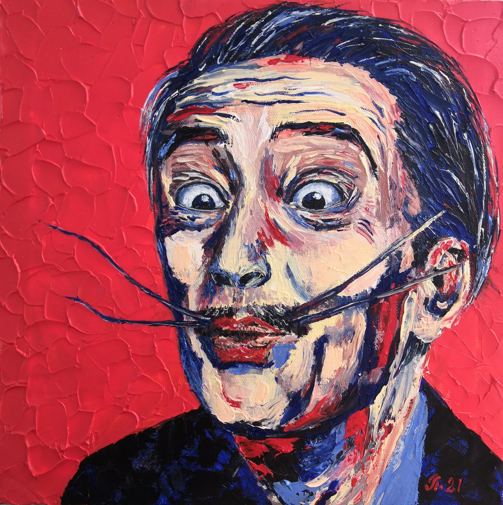

Salvadore Dali portrait

FACTS
- Full name Salvador Domingo Felipe Jacinto Dalí i Domènech
- Born May 11, 1904 (Figueres, Spain) - died January 23, 1989 (Figueres, Spain)
- He believed he was a reincarnation of his dead brother.
- He started painting as a young child.
- He was expelled from art school (twice).
- He didn’t do drugs.
- He created The Persistence of Memory when he was 28.
- Surrealists weren’t pleased with him.
I did't find a description😅😅😅